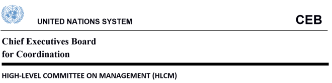
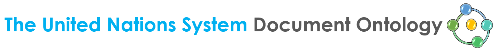

Working Group on Document Standards
A framework for the description of United Nations system
documents’ entities and their relationships
The UNDO is a living document, which will be subject to regular updates to incorporate new developments and requirements. The online version is available at https://w3id.org/un/ontology/undo; and shall be considered the latest and authoritative versions.
This document was drafted in the context of the HLCM Working Group on Document Standards under the technical supervision of Silvio Peroni.

Background
The HLCM Working Group on Document Standards was tasked to define a common set of guidelines for the semantic mark-up of UN documents based on the Akoma Ntoso standard of the LegalDocumentML Technical Committee1 of the Organization for the Advancement of Structured Information Standards2 (OASIS), which has defined an open document standard for parliamentary, legislative, administrative, executive, and judicial documents.
The objective was to provide the foundations for the deployment of smart services for the management of parliamentary, normative, judicial and official documents to increase the efficiency of the parliamentary processes, reduce the administrative and financial burden, facilitate the re-use and preservation of official documents, and realise significant gains in terms of accountability and transparency.
These Guidelines are the outcome of the work (Jun 2016 – Mar 2017) of the HLCM Working Group on Document Standards, composed of members from the following participating organizations:
CEB-HLCM | Chief Executives Board for Coordination - High-Level Committee on Management |
FAO | Food and Agriculture Organization |
IAEA | International Atomic Energy Agency |
ICAO | International Civil Aviation Organization |
IFAD | International Fund for Agricultural Development |
ILO | International Labour Organization |
IMO | International Maritime Organization |
UN-DGACM | United Nations - Department for General Assembly and Conference Management |
UNDP | United Nations Development Programme |
UNEP | United Nations Environmental Programme |
UNESCO | United Nations Educational, Scientific and Cultural Organization |
UNICEF | United Nations Children's Emergency Fund |
UN WOMEN | UN Women |
WFP | World Food Programme |
WHO | World Health Organization |
WIPO | World Intellectual Property Organization |
The WGDS has met regularly online from July 2016 to March 2017 to carry out joint analyses and consultations and to work toward the definition of the UN Semantic Interoperability Framework for normative and parliamentary documents (UNSIF) as formed by:
Akoma Ntoso for the United Nations System (AKN4UN) (see www.w3id.org/un/schema/akn4un), which defines the guidelines for the localisation of the Akoma Ntoso XML standard to the specific requirements of UN parliamentary and normative documents.
The United Nations System Document Ontology (UNDO), which provides a formal representation of UN document basic entities and their relationships.
This document introduces the United Nations System Document Ontology3 (UNDO). UNDO is an OWL4 2 DL ontology that models the main aspects of the United Nations Documents domain, so as to enable the production of descriptive data compliant with Semantic Web technologies such as OWL and RDF to facilitate their sharing and reuse on the Web.
Introduction
The parliamentary, normative and judicial documents published by the United Nations system of organizations, from now on “UN Documents”, are full of references to real-world objects and concepts, such as other documents, people, organizations, legal terms, and roles. Such entities are linked with the actual content of the document, even by means of different terms being the UN documents often issued in several official languages.
The Akoma Ntoso ontology is centred on the concept of document, which is considered in a very precise way through the specifications of the Functional Requirements for Bibliographic Records5 (FRBR) standard of the International Federation of Library Associations (IFLA).
The Akoma Ntoso ontology structure is divided in two main categories:
document classes: focused on all entities that represent the different aspects of a document as intellectual creation, the forms (versions, translations, etc.) that it may take and its physical embodiment (PDF, XML, HTML, paper, etc.);
non-document classes: focused on two different aspects, namely who is responsible for the production of the content (organization, person, etc.) and what the content is about (concept, object, event, locations, roles, deliberation steps, etc.).
For the document classes Akoma Ntoso has defined a set of prescriptive / canonical classes and sub-classes modelled on the FRBR conceptualization of documents. These classes are referred via specific XML tags (prefixed by “FRBR”) in Akoma Ntoso documents. For non-document classes of parliamentary and legal matters, the Akoma Ntoso specifications do not define the ontology, as it could be overly wide and all-encompassing due to the very varied issues that legal and parliamentary documents deal with. Akoma Ntoso only specifies a very broad set of general guidelines that an ontology should conform to. These informal guidelines are referred via specific XML tags (prefixed by “TLC”) in Akoma Ntoso documents, each referring to a particular informal top level class (TLC), we say informal because it is not defined by means of a formal language such as logics.
The United Nations System Document Ontology6 (UNDO) is an OWL 2 DL ontology that aims to provide a framework for the formal description of all entities and the relations that can exist among them in UN Documents, a description that is not provided by Akoma Ntoso itself. The idea behind the development of this model is to have a mechanism for sharing data about documents and their content in RDF format and, eventually, extended by the various agencies of the United Nations to meet their own domain specific requirements.
The rest of the document is organized as follows:
ALLOT: A Light Legal Ontology on TLCs introduces the basic ontological module that is used as starting point for the development of UNDO, so as to guarantee its compatibility with Akoma Ntoso documents.
UNDO Structure describes all the main ontological entities UNDO defines.
Future Directions concludes the document and sketches out some future developments.
Annex 1: Examples of scenarios that UNDO can describe. Here several scenarios that are typical to the documents published by the United Nations organisations (e.g. UN Resolutions) are illustrated in RDF and possible natural language questions related to each scenario are represented in SPARQL queries.
Annex 2: Methods and Material that have supported the development of UNDO.
Annex 3: Technical Documentation.
3 The latest and authoritative versions of UNDO is available at https://w3id.org/un/ontology/undo; and all source files can be found in the GitHub repository at https://w3id.org/un/repository/undo.
4 Web Ontology Language (OWL) for more info see https://en.wikipedia.org/wiki/Web_Ontology_Language
5 FRBR standard of the International Federation of Library Associations (IFLA) http://www.ifla.org/publications/functional-requirements-for-bibliographic-records
6 The latest and authoritative versions of UNDO is available at https://w3id.org/un/ontology/undo; and all source files can be found in the GitHub repository at https://w3id.org/un/repository/undo.